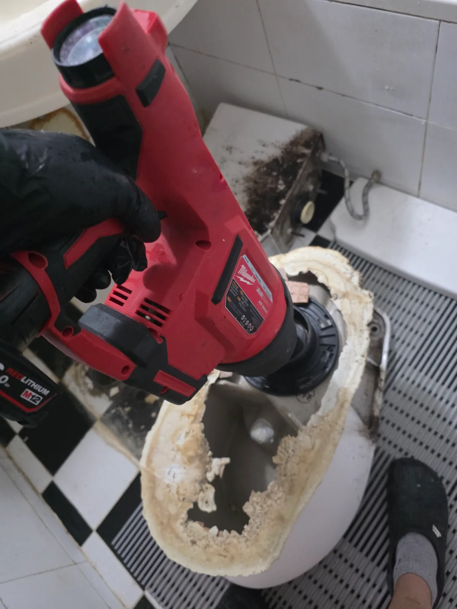

강동구 길동 변기막힘, 현장 도착 후 진단
강동구 길동 변기막힘 요청을 접수한 신라건축설비는 변기 탈거 공구와 에어건을 준비해 신속하게 현장으로 출동했습니다. 숙련된 변기막힘 전문 기술자가 물내림 상태와 수위 변화를 점검한 결과, 단순한 휴지 막힘과는 다른 강한 저항이 확인됐습니다.
단단한 물건이 변기 트랩에 걸린 상태에서 관통기를 무리하게 사용하면 이물질이 더 깊이 들어가거나 도기가 손상될 수 있습니다. 변기 자체의 막힘과 바닥 오수관 문제를 정확히 구분하기 위해 변기를 탈거하고 하부 배출구에서 내부 상태를 확인하기로 했습니다.
1단계: 증상 확인과 필요한 장비 작업
먼저 변기 급수 밸브를 잠그고 물탱크와 도기 내부의 물을 정리했습니다. 주변 시설물이 손상되지 않도록 고정 부위를 해체한 뒤 변기를 조심스럽게 탈거했습니다. 변기를 들어낸 후 바닥 오수관 입구를 점검해 배관 쪽에 별도의 막힘이 없는지 확인했습니다.
탈거한 변기의 하부 배출구를 살펴보자 검은색 전자담배가 굴곡진 트랩 구간에 단단하게 걸려 있었습니다. 물에 녹지 않고 일정한 크기와 형태를 유지하는 물건이어서 물의 압력만으로는 빠져나갈 수 없는 상태였습니다.

2단계: 원인 구간 처리와 정상 작동 확인
변기의 하부 배출구에 밀워키 충전식 에어건을 밀착시키고 압력을 단계적으로 조절하며 내부 트랩으로 공기를 주입했습니다. 한 번에 과도한 압력을 가하지 않고 전자담배가 움직이는 방향을 확인하면서 반복적으로 작업했습니다. 트랩 안쪽에서 전자담배가 배출된 후 주변에 남아 있던 휴지와 오염물도 함께 정리했습니다.
변기 내부로 충분한 물을 흘려보내 잔존 막힘이 없는지 확인하고 바닥 오수관 입구까지 다시 점검했습니다. 이후 변기를 원래 위치에 재설치하고 여러 차례 물을 내려 배수 속도와 수위 변화, 하부 누수 여부를 확인했습니다.

작업 결과와 재발 방지 안내
전자담배를 제거한 뒤 변기 물이 차오르거나 정체되지 않고 빠르게 배출되는 것을 확인했습니다. 전자담배처럼 길쭉하고 단단한 생활용품은 변기 입구를 통과하더라도 내부의 굴곡진 트랩에서 방향이 바뀌면서 쉽게 걸릴 수 있습니다. 전자담배와 화장품 용기, 칫솔, 장난감, 물티슈 등 물에 녹지 않는 물건은 변기에 들어가지 않도록 주의해야 합니다.
물건이 빠진 이후 변기막힘이 발생했다면 뚫어뻥이나 관통기를 계속 사용하기보다 어떤 물건이 들어갔는지 기술자에게 알려주는 것이 좋습니다. 단단한 이물질을 더 깊이 밀어 넣으면 변기 탈거뿐 아니라 하부 오수관 작업까지 필요할 수 있습니다.
신라건축설비는 강동구 길동을 비롯한 서울 전 지역과 경기권에 신속하게 출동하여 변기막힘·싱크대막힘·하수구막힘을 전문적으로 해결합니다. 변기막힘의 원인과 위치에 따라 석션, 관통, 에어건, 변기 탈거와 오수관 점검 등 적합한 공법을 선택합니다. 단순 생활 막힘부터 공용 오수관 진단, 고압세척과 배관 보수·교체공사까지 자체적으로 대응합니다.
최종 조치: 변기를 안전하게 탈거한 뒤 하부 배출구 방향에서 밀워키 충전식 에어건으로 압력을 가해 트랩에 걸린 전자담배를 밖으로 배출했습니다. 변기 내부와 바닥 오수관 입구를 확인한 후 재설치하고 반복 물내림 검사로 정상 배수를 확인했습니다.
현장 방문 전 확인하는 비용과 작업 범위
신라건축설비는 현장 증상과 배관 구조를 확인한 뒤 필요한 작업과 예상 비용을 안내합니다. 단순 관통으로 해결되는지, 배관내시경·석션·고압세척 또는 변기 탈거가 필요한지는 현장 상태에 따라 달라집니다. 출장비와 야간 작업비, 추가 장비 비용이 발생할 수 있는 경우 작업 전에 먼저 설명하고 동의를 받은 범위에서 진행합니다.
업체를 선택할 때 확인할 사항
무조건적인 ‘0원’ 표현보다 실제 작업 범위, 추가 비용 조건, 사용 장비와 사후 대응 기준을 확인하는 것이 중요합니다. 해결되지 않았을 때의 비용 기준과 작업 후 동일 증상 발생 시 점검 범위를 사전에 문의해두면 불필요한 분쟁을 줄일 수 있습니다.
강동구 변기막힘 자주 묻는 질문
변기막힘은 왜 반복되나요?
강동구 길동 현장처럼 변기 물을 내리면 수위가 비정상적으로 차오르고 물이 천천히 빠지는 증상이 반복됐습니다. 휴지나 오물에 의한 일반적인 막힘보다 단단한 생활용품이 변기 내부에 걸렸을 가능성이 높은 상태였습니다. 증상은 원인이 현장마다 다를 수 있습니다. 변기 내부 이물질뿐 아니라 하부 오수관 막힘이나 배관 상태 때문에 반복될 수 있습니다. 같은 변기막힘이 재발하면 막힌 위치와 원인을 다시 확인하는 것이 중요합니다.
변기 물이 안 내려가거나 역류하면 변기뚫는업체를 불러야 하나요?
물이 천천히 내려가거나 수위가 차오르고 변기역류가 반복되면 단순 뚫어뻥보다 전문 장비 점검이 필요한 경우가 있습니다. 현장에서는 증상과 배관 구조를 먼저 확인합니다.
변기 이물질 막힘은 변기를 탈거해야 하나요?
물티슈·청소포·플라스틱·음식물처럼 변기 트랩에 걸린 이물질은 위치에 따라 변기 탈거가 필요할 수 있습니다. 무조건 탈거하지 않고 먼저 막힘 위치를 판단합니다.
변기뚫는업체는 어떤 장비로 작업하나요?
현장 상태에 따라 석션, 에어건, 배관내시경, 변기 탈거 등을 사용합니다. 하부 오수관 문제라면 변기만 뚫는 작업보다 배관 구간 확인이 중요합니다.
변기막힘 비용은 어떻게 정해지나요?
단순 관통인지, 이물질 제거와 변기 탈거가 필요한지, 오수관이나 공용배관 작업이 필요한지에 따라 달라집니다. 추가 장비나 작업이 필요하면 진행 전에 범위와 비용을 안내합니다.
변기에서 냄새가 나거나 물이 자주 차오르는 것도 막힘과 관련 있나요?
악취나 수위 이상이 항상 막힘 때문인 것은 아니지만 배수 불량, 오수관 상태, 연결부 문제와 함께 나타날 수 있습니다. 반복되면 현장 점검으로 원인을 구분해야 합니다.
변기막힘 서울·경기 출동지역
신라건축설비는 강동구 길동 현장을 포함해 서울 25개 구와 경기도 31개 시·군의 배관 문제를 상담합니다. 현장 거리와 기사 배정 상황에 따라 출동 가능 여부를 먼저 안내드립니다.
서울 전 지역
강남구 · 강동구 · 강북구 · 강서구 · 관악구 · 광진구 · 구로구 · 금천구 · 노원구 · 도봉구 · 동대문구 · 동작구 · 마포구 · 서대문구 · 서초구 · 성동구 · 성북구 · 송파구 · 양천구 · 영등포구 · 용산구 · 은평구 · 종로구 · 중구 · 중랑구
경기도 주요 출동지역
수원시 · 용인시 · 고양시 · 화성시 · 성남시 · 부천시 · 남양주시 · 안산시 · 평택시 · 안양시 · 시흥시 · 파주시 · 김포시 · 의정부시 · 광주시 · 하남시 · 광명시 · 군포시 · 양주시 · 오산시 · 이천시 · 안성시 · 구리시 · 의왕시 · 포천시 · 양평군 · 여주시 · 동두천시 · 과천시 · 가평군 · 연천군